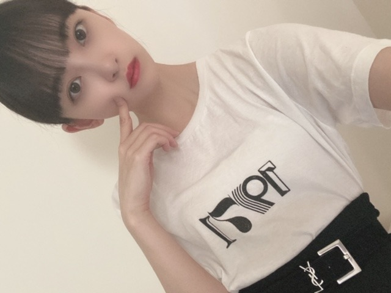
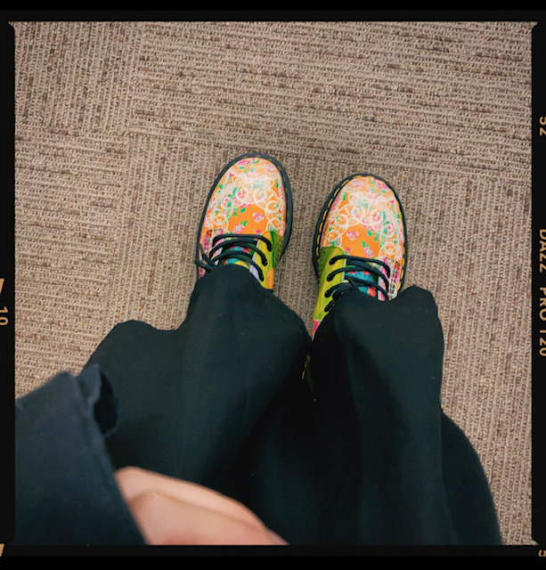

2020/0909Wed眩
秋なのでさらにワントーンコーデが
多くなりました！
あ、あと、昨日中津川の栗きんとん食べました！
栗きんとんだいすきなので
うきうきでした
美味やった


Herliptoのワンピースかわちい
撮影おわりでオン眉。
あ、あと最近マーチンの
かわいいブーツおろしました！
2年まえくらいから持っててあまり履いてなくて...
今年の秋冬はたくさん履きます！
古着ブームも再来！

秋のプレイリスト
くるみ / Mr.Childrenさん
正夢 / スピッツさん
黄昏サラウンド / RIP SLYMEさん
Vinyl / King Gnuさん
Instagram / DEANさん
幸せ / back numberさん
エンディング / back numberさん
お互い様やん / あいみょんさん
猫じゃらし / RADWIMPSさん
しっとりな曲が多めかな
みなさんはなに聞きますか？

お外を見るのがすきなプーちゃん^ - ^
一緒に風に当たりながら外を見てました
わたしに顔似てる
車はすきだけど三半規管が弱いから
酔いやすいのがなやみ。
三半規管を強くする方法教えてください。。
では
来週の日曜日は "乃木坂46のの"にでます！
れんかと楽しくトークしました〜
物事をみる観点が似てます
12日はarの発売日です♡
23歳現在のわたしを特集していただきました
Q&A盛りだくさんです〜
ではでは
2020/09/09 17:48
コメント(275)
更新ありがとうございます！
自分なりのプレイリストがないので
堀さんが挙げてるプレイリストを基に構築していこうと思います！
arのQ&Aの中身が物凄く楽しみなので絶対に買います！
あばﾉｼ
自分なりのプレイリストがないので
堀さんが挙げてるプレイリストを基に構築していこうと思います！
arのQ&Aの中身が物凄く楽しみなので絶対に買います！
あばﾉｼ
未央奈さん、今、ALL MY COLLECTION 2 みてます。2期生楽曲、ゆっくりと咲く花、アナスターシャなど改めていい曲が多いと感じました。それとRoute 246、これも改めてMV見るとすごくカッコいい曲です。
今日のワンピースの写真、すごく似合っているよ。可愛い。
今日のワンピースの写真、すごく似合っているよ。可愛い。
ブログ更新頻度速いね～好き
しっとり曲好きですよ、心が安らぐことになります。
犬ちゃんと共に後部座席シートベルトちゃんと着用でいい公民ですね。どこへ行きますか。
岩本さんとのラジオ楽しみ
しっとり曲好きですよ、心が安らぐことになります。
犬ちゃんと共に後部座席シートベルトちゃんと着用でいい公民ですね。どこへ行きますか。
岩本さんとのラジオ楽しみ
堀さん。 「内容盛りだくさん」なblog更新ありがとうございます。
秋のプレイリスト「70-80年代の洋楽」。小生が若かりし頃、よく聞いたものを「CD」で、目眩するほど無性に聞いている次第です。
「プティさん」と「美女未央奈」かわええ尽くしで小生「酔いしれて」しまうかも。
さて。「車酔い」ですがワンコも人も共通な予防法が御座います。下記参照のほど。
睡眠充分、ストレスの除去、体を締め付ける衣類をやめる、空腹満腹を避ける、リラックスをこころがける。
視点移動に注意（スマホ、読書、近くを見続けないなど）、車内の換気。「酔わないと」信じる、兎に角慣れる。
なお。「わんこ」では「プティさん」のように小型犬なら「キャリー、クレート」などで安定するもので。
あ。「乃木坂46のの」拝聴いたす予定でございます。 未央奈さん。プティさんも季節の変わり目。ご自愛ください。お元気でいてね！！
秋のプレイリスト「70-80年代の洋楽」。小生が若かりし頃、よく聞いたものを「CD」で、目眩するほど無性に聞いている次第です。
「プティさん」と「美女未央奈」かわええ尽くしで小生「酔いしれて」しまうかも。
さて。「車酔い」ですがワンコも人も共通な予防法が御座います。下記参照のほど。
睡眠充分、ストレスの除去、体を締め付ける衣類をやめる、空腹満腹を避ける、リラックスをこころがける。
視点移動に注意（スマホ、読書、近くを見続けないなど）、車内の換気。「酔わないと」信じる、兎に角慣れる。
なお。「わんこ」では「プティさん」のように小型犬なら「キャリー、クレート」などで安定するもので。
あ。「乃木坂46のの」拝聴いたす予定でございます。 未央奈さん。プティさんも季節の変わり目。ご自愛ください。お元気でいてね！！
お疲れ様です、堀さん。
そうですね、栗きんとんがだいすきという堀さん、いろんな美味しい食べ物が旬で、秋コーデを楽しめたり、秋、堀さんには嬉しい季節ではないでしょうか
そうですね、僕も好きなシーズンですね（笑）
そうですね、三半規管を鍛える方法、ということで、そうですね、個人的にかつて体育の授業で習ったのですけどね、前転とか後転とか、あるいは堀さんの好きな側転も効果があるのではないかなと思うのですけどね、そうゆう運動をすることで鍛えられるそうです！
そうですね、個人的に、その昔、そうゆう話を聞いて、個人的に前転とか、回るような運動試しにたくさんしてみたら、なんだか車に酔ったような感覚になりましたね
そうですね、またなにかお話したいことがあればコメントします。
健康にはお気をつけてお過ごしください！
そうですね、栗きんとんがだいすきという堀さん、いろんな美味しい食べ物が旬で、秋コーデを楽しめたり、秋、堀さんには嬉しい季節ではないでしょうか
そうですね、僕も好きなシーズンですね（笑）
そうですね、三半規管を鍛える方法、ということで、そうですね、個人的にかつて体育の授業で習ったのですけどね、前転とか後転とか、あるいは堀さんの好きな側転も効果があるのではないかなと思うのですけどね、そうゆう運動をすることで鍛えられるそうです！
そうですね、個人的に、その昔、そうゆう話を聞いて、個人的に前転とか、回るような運動試しにたくさんしてみたら、なんだか車に酔ったような感覚になりましたね
そうですね、またなにかお話したいことがあればコメントします。
健康にはお気をつけてお過ごしください！
2期生にもっと、もっと頑張ってほしいです！！
未央奈ちゃんこんばんは☺️
可愛いコーデ♪
秋色コーデだね
ブーツも可愛い(〃^ー^〃)
秋はELLEGARDENのthe autumn songを聴くよ
秋はじめに毎回聴くなあ
明日もHAPPYを
お休みなさい(^-^ゞ
可愛いコーデ♪
秋色コーデだね
ブーツも可愛い(〃^ー^〃)
秋はELLEGARDENのthe autumn songを聴くよ
秋はじめに毎回聴くなあ
明日もHAPPYを
お休みなさい(^-^ゞ
更新ありがとう
栗きんとん食べたんだ！
来週、恵那の栗きんとんが勇名なお店に『栗一筋』食べに行くよ！
去年も食べたんだけど、通常のモンブランの３倍ぐらいの大きさで、美味しいよ❗
未央奈ちゃん、眉毛太いんだね。
可愛い❤️
大好き❤️
栗きんとん食べたんだ！
来週、恵那の栗きんとんが勇名なお店に『栗一筋』食べに行くよ！
去年も食べたんだけど、通常のモンブランの３倍ぐらいの大きさで、美味しいよ❗
未央奈ちゃん、眉毛太いんだね。
可愛い❤️
大好き❤️
未央奈ちゃんブログ更新ありがとう！
さくらちゃんとあやめちゃんとでんちゃんと同じ愛知県出身の愛知の覇王です！
蓮加ちゃんと同じ高校2年生です！
ブログ頻度が高くてめっちゃ嬉しいです！
昨日ミュージック・ビデオコレクション2、セブンネットでゲットしたけど、学校とかで忙しくてまだ、見れてません！
見たら、感想伝えますね！
これからもずっと応援するので、頑張ってください！
さくらちゃんとあやめちゃんとでんちゃんと同じ愛知県出身の愛知の覇王です！
蓮加ちゃんと同じ高校2年生です！
ブログ頻度が高くてめっちゃ嬉しいです！
昨日ミュージック・ビデオコレクション2、セブンネットでゲットしたけど、学校とかで忙しくてまだ、見れてません！
見たら、感想伝えますね！
これからもずっと応援するので、頑張ってください！
未央奈ブログUPありがとうございます
栗きんとん、お正月しか食べれないけど俺も好き！
岐阜の名産だもんねー
栗きんとん、お正月しか食べれないけど俺も好き！
岐阜の名産だもんねー
未央奈今日もお疲れ様っ！！
推しの推しの未央奈がブログ更新してくれることが生きがいです笑
忙しいと思うけどありがとう！！
明日も頑張ろう
れお
推しの推しの未央奈がブログ更新してくれることが生きがいです笑
忙しいと思うけどありがとう！！
明日も頑張ろう
れお
未央奈さん、こんばんは
栗きんとん大好きです
これから栗が美味しい季節ですね
ワントーンコーデ
秋らしくてシンプルで格好いいです
微かに見えてるバックルが
おしゃれですね
オン眉も可愛らしい～
ブーツのカラーリング
華やかで素敵です
プーちゃん、未央奈さんと
お出かけできて嬉しいね(^_^)
でんぐり返しすると
三半規管が鍛えられるそうですよ
乃木坂46のの
ar楽しみにしています
応援しています(^_^)
栗きんとん大好きです
これから栗が美味しい季節ですね
ワントーンコーデ
秋らしくてシンプルで格好いいです
微かに見えてるバックルが
おしゃれですね
オン眉も可愛らしい～
ブーツのカラーリング
華やかで素敵です
プーちゃん、未央奈さんと
お出かけできて嬉しいね(^_^)
でんぐり返しすると
三半規管が鍛えられるそうですよ
乃木坂46のの
ar楽しみにしています
応援しています(^_^)
お互いに、


古着も中々良いよね。自分の好きな服など着こなせると色々楽しいよね。
堀ちゃん可愛い\(//∇//)\
堀ちゃん可愛い\(//∇//)\
三半規管を強くする方法？
まずは二半規管から強くする！！
ﾄﾞｺｯ!?(oﾟ∀ﾟ)=○ )´3｀)∴
)´3｀)∴
まずは二半規管から強くする！！
ﾄﾞｺｯ!?(oﾟ∀ﾟ)=○
未央様今日もお綺麗です！
実は今回あまりコメントすることない。
写真の未央奈が可愛かった
これだけ。
秋のプレイリストなどない。夏と卒業シーズンだけだがや。
実は今回あまりコメントすることない。
写真の未央奈が可愛かった
これだけ。
秋のプレイリストなどない。夏と卒業シーズンだけだがや。
中津川の栗きんとんおいしいですよね
秋のプレイリストにMr.Childrenさんのくるみ、スピッツさんの正夢、back numberさんの幸せ、エンディングはすごくわかります
自分の好きな曲を未央奈さんも好きなのは嬉しいですね
秋のプレイリストにMr.Childrenさんのくるみ、スピッツさんの正夢、back numberさんの幸せ、エンディングはすごくわかります
自分の好きな曲を未央奈さんも好きなのは嬉しいですね
堀ちゃん、こんばんは＼(・ω・)／
・・・三半規管を強くする方法。
三半規管に「気合いだぁーー！！ばちーーんっ！！」って、闘魂を注入してみたらどう？
・・・強くなるどころか、逆に使い物にならなくなるので絶対にやめよう
ブーツの柄がすごい
僕は夏でも冬でも、1年中なんでも聴くかな。
秋から冬に差し掛かるであろう時期に桜ソングを聴いたりすることも全然あるよ。
・・・三半規管を強くする方法。
三半規管に「気合いだぁーー！！ばちーーんっ！！」って、闘魂を注入してみたらどう？
・・・強くなるどころか、逆に使い物にならなくなるので絶対にやめよう
ブーツの柄がすごい
僕は夏でも冬でも、1年中なんでも聴くかな。
秋から冬に差し掛かるであろう時期に桜ソングを聴いたりすることも全然あるよ。
栗きんとん美味しそうですね
岐阜の有名なおかしなんだね(多分…？)
同じ岐阜のLiSAさんも昔、紹介してたからそうなのかなって
前髪重めからオン眉の前髪かわいいー！
初めてじゃなかったらごめんなさい
僕にとっては初めて見るので…
すっごく似合ってます ずっとしてほしいなぁ～(笑)
最近聴いているのは、LiSAさんと藍井エイルさん
元々アニメが好きなので、それからハマってる感じです
LiSAさんは、Rising Hopeや愛錠でエイルさんは幻影やBreak Outなどを聴いてます
LiSA=紅蓮華というイメージが多いですがいろんないい歌がありますよ
未央奈ちゃんお仕事お疲れ様でした
ブログ更新ありがとう
ばいちー
岐阜の有名なおかしなんだね(多分…？)
同じ岐阜のLiSAさんも昔、紹介してたからそうなのかなって
前髪重めからオン眉の前髪かわいいー！
初めてじゃなかったらごめんなさい
僕にとっては初めて見るので…
すっごく似合ってます ずっとしてほしいなぁ～(笑)
最近聴いているのは、LiSAさんと藍井エイルさん
元々アニメが好きなので、それからハマってる感じです
LiSAさんは、Rising Hopeや愛錠でエイルさんは幻影やBreak Outなどを聴いてます
LiSA=紅蓮華というイメージが多いですがいろんないい歌がありますよ
未央奈ちゃんお仕事お疲れ様でした
ブログ更新ありがとう
ばいちー
あら。ワントーン。
栗きんとんってさー
正月のイメージが強い私。
年中販売している食品ですよね。きっと。
3枚目のもなかなか。
カラフル！靴。カラフル！
むしろ履いてみたいけど（笑）
最近は靴に派手さを求めようとしている自分がいる。
秋？秋桜？
･･･飼い主に似たの？
それとも飼い主が似たの？
どっちかな～（笑）
三半規管ってさー
フィギュアスケートの人とか強いらしいよね。
常時グルグルしてるからかな～
お～久しぶりの「の」
○○放送の連呼が懐かしい（笑）
栗きんとんってさー
正月のイメージが強い私。
年中販売している食品ですよね。きっと。
3枚目のもなかなか。
カラフル！靴。カラフル！
むしろ履いてみたいけど（笑）
最近は靴に派手さを求めようとしている自分がいる。
秋？秋桜？
･･･飼い主に似たの？
それとも飼い主が似たの？
どっちかな～（笑）
三半規管ってさー
フィギュアスケートの人とか強いらしいよね。
常時グルグルしてるからかな～
お～久しぶりの「の」
○○放送の連呼が懐かしい（笑）
未央奈ちゃん、 こんばんは！
白いTシャツは透けるね！緑色の服の写真もお洒落です。
おやすみ
白いTシャツは透けるね！緑色の服の写真もお洒落です。
おやすみ
未央奈ちゃん。ブログ更新ありがとう！中津川 確か、、、岐阜県ですね。多治見市に行った時にその近くにあった記憶あります。栗きんとんですか。わたしは、ケーキに乗ってる、マロンがすきです。
みおなちゃ～ん！！
私もずっっっこい三半規管弱くて、乗り物あんま乗れない！みおなちゃん、乗り物たくさん乗るから大変だよね～！
私は最近なーちゃんのソロ曲の釣り堀よく聞いてるよ～！
ar楽しみに待ってるね～！
今日も、お疲れさまです！
私もずっっっこい三半規管弱くて、乗り物あんま乗れない！みおなちゃん、乗り物たくさん乗るから大変だよね～！
私は最近なーちゃんのソロ曲の釣り堀よく聞いてるよ～！
ar楽しみに待ってるね～！
今日も、お疲れさまです！
未央奈ちゃん更新ありがとう
ワントーンコーデ良きですね♪
秋も楽しみましょうね(*^^*)
ブーツカッコいいなぁ✴
秋のプレイリストもありがとう♪
私は乃木坂の曲が多いかな～☺
ar楽しみにしてます(^^)❤
ワントーンコーデ良きですね♪
秋も楽しみましょうね(*^^*)
ブーツカッコいいなぁ✴
秋のプレイリストもありがとう♪
私は乃木坂の曲が多いかな～☺
ar楽しみにしてます(^^)❤
かわいー
ぼくもスピッツやRADWIMPS大好きです！
あの優しい声が凄い好きです！
ぼくもスピッツやRADWIMPS大好きです！
あの優しい声が凄い好きです！
ブログ更新ありがとうございます！
堀ちゃんのコーデとてもおしゃれでいいですね！
堀ちゃんのコーデとてもおしゃれでいいですね！
みおなちゃん更新ありがとう〜！
最近いつもに増して更新多い気がして、写真も沢山で嬉しいです！！
わたしは学校でiPadを横向きでよく使うんだけど、ホーム画面みおなちゃんにしたいから、時間の表示に被らなそうないい感じの写真あったら嬉しいな、、とかリクエストしてもいいのかな、、！
またの更新楽しみにしてます！♡
最近いつもに増して更新多い気がして、写真も沢山で嬉しいです！！
わたしは学校でiPadを横向きでよく使うんだけど、ホーム画面みおなちゃんにしたいから、時間の表示に被らなそうないい感じの写真あったら嬉しいな、、とかリクエストしてもいいのかな、、！
またの更新楽しみにしてます！♡
お互い様やんは渋い！笑
あいみょんどんどん聞いて～
あいみょんどんどん聞いて～
未央奈～ こんにちは
連日のブログ更新ありがとうございます。
「中津川の栗きんとん」、実は、一昨日の我が家で話題になっていました。今日のブログ見て、びっくり(栗)です。
第２弾となる５年ぶりの乃木坂のMV集、発売おめでとうございます。昨日お約束した通り、感想を書きます。
MV本体は今まで発売されたものですから、今回の一番の楽しみは「ゆっくりと咲く花」でした。見事に期待を裏切らない名曲。３月のあの幻のライブを思い出しました。最後に２階の客席から眺めるシーン、ハッとしました。
それにたくさんのエピソードを満載したメイキングビデオ、こちらもたっぷりと楽しませていただきました。ソフトクリームのエピソードも‥‥。
そういえば、今日の猫舌で、新４期生のるなぴが「アナスターシャ」が素晴らしいって言ってましたよ。
次回の「のぎの『の』」、楽しみにしたいと思います。「レコメン」「のぎの『の』」は、未央奈にとっての登竜門、懐かしいですね。そういえば、今月の文化放送の「フクミミ」、レコメンのまゆたんが表紙です。２年前の２月の同じ光景を思い出しました。
連日のブログ更新ありがとうございます。
「中津川の栗きんとん」、実は、一昨日の我が家で話題になっていました。今日のブログ見て、びっくり(栗)です。
第２弾となる５年ぶりの乃木坂のMV集、発売おめでとうございます。昨日お約束した通り、感想を書きます。
MV本体は今まで発売されたものですから、今回の一番の楽しみは「ゆっくりと咲く花」でした。見事に期待を裏切らない名曲。３月のあの幻のライブを思い出しました。最後に２階の客席から眺めるシーン、ハッとしました。
それにたくさんのエピソードを満載したメイキングビデオ、こちらもたっぷりと楽しませていただきました。ソフトクリームのエピソードも‥‥。
そういえば、今日の猫舌で、新４期生のるなぴが「アナスターシャ」が素晴らしいって言ってましたよ。
次回の「のぎの『の』」、楽しみにしたいと思います。「レコメン」「のぎの『の』」は、未央奈にとっての登竜門、懐かしいですね。そういえば、今月の文化放送の「フクミミ」、レコメンのまゆたんが表紙です。２年前の２月の同じ光景を思い出しました。
未央奈ちゃんこんばんは。今日もオシャレですね。オシャレな未央奈ちゃんにとっては四季の中でも秋はやっぱり楽しみな季節なのかな？
プレイリストの中では僕はミスチルさんのくるみが好きかな。コロナ以前に友達とカラオケスナックに飲みに行ったりしてた時にはよくミスチルさんは歌ったなぁ。あ～、懐かしいよ～。あと、個人的には秋になると竹内まりやさんとか聴きたくなるかなぁ
ＭＶコレクションの「ゆっくりと咲く花」見させてもらいました。歌詞も『まさに2期生のための歌』って感じで胸にくるものがあったし、ＭＶの世界観もとても素敵でした。取り急ぎ感想を伝えたくてかなり拙い言葉での感想になってしまったけど、何度も繰り返し見て、より深く心に刻みたいって思わせてくれる作品だったことだけは間違いなく言えます。どこかでまた感想を伝える機会があったらもう少し濃い内容で伝えたいなぁって思ってます。
しばらくはＭＶ集を見ながら何年か前を思い返しそうですね(笑)。ではまたブログ待ってます。
プレイリストの中では僕はミスチルさんのくるみが好きかな。コロナ以前に友達とカラオケスナックに飲みに行ったりしてた時にはよくミスチルさんは歌ったなぁ。あ～、懐かしいよ～。あと、個人的には秋になると竹内まりやさんとか聴きたくなるかなぁ
ＭＶコレクションの「ゆっくりと咲く花」見させてもらいました。歌詞も『まさに2期生のための歌』って感じで胸にくるものがあったし、ＭＶの世界観もとても素敵でした。取り急ぎ感想を伝えたくてかなり拙い言葉での感想になってしまったけど、何度も繰り返し見て、より深く心に刻みたいって思わせてくれる作品だったことだけは間違いなく言えます。どこかでまた感想を伝える機会があったらもう少し濃い内容で伝えたいなぁって思ってます。
しばらくはＭＶ集を見ながら何年か前を思い返しそうですね(笑)。ではまたブログ待ってます。
未央奈ちゃん、こんばんは。
オン眉の写真、めっちゃ可愛い。
未央奈ちゃんの瞳が好きです。
また、更新待ってます。
オン眉の写真、めっちゃ可愛い。
未央奈ちゃんの瞳が好きです。
また、更新待ってます。
こんばんは！
3枚目の写真
なんかめちゃくちゃタイプです。
"ゆっくりと咲く花"のMV見させていただきました！
これまでの二期生の歩みを考えながら聞いて
とても感動しました。
個人的秋のプレイリストは
泣かないで／シャ乱Ｑ
サヨナラ／ジッタリンジン
believe／吉井和哉
After Hours／We Are Scientists
アヌグル／MINMI
です！
最近、シャ乱Ｑにハマってます。
声がいいんですよね〜
だいぶ朝晩気温が下がってきているので
体調気をつけてくださいねー！
それでは
3枚目の写真
なんかめちゃくちゃタイプです。
"ゆっくりと咲く花"のMV見させていただきました！
これまでの二期生の歩みを考えながら聞いて
とても感動しました。
個人的秋のプレイリストは
泣かないで／シャ乱Ｑ
サヨナラ／ジッタリンジン
believe／吉井和哉
After Hours／We Are Scientists
アヌグル／MINMI
です！
最近、シャ乱Ｑにハマってます。
声がいいんですよね〜
だいぶ朝晩気温が下がってきているので
体調気をつけてくださいねー！
それでは
未央奈更新ありがとう！！
ar絶対見るー！！arの世界観と未央奈がほんと絶妙にマッチしてるからめっちゃ好きなんだよー！！リクエストなんやけど今年の秋！のおすすめメイク見たいなあ秋メイクにおすすめなコスメも知りたいです！！！
あと久々にタメ口ブログも見たい♡注文ばっかりだねごめんね、、
体調に気をつけてね^_^
ar絶対見るー！！arの世界観と未央奈がほんと絶妙にマッチしてるからめっちゃ好きなんだよー！！リクエストなんやけど今年の秋！のおすすめメイク見たいなあ秋メイクにおすすめなコスメも知りたいです！！！
あと久々にタメ口ブログも見たい♡注文ばっかりだねごめんね、、
体調に気をつけてね^_^
可愛い
色んなメイク似合う✨✨
MV集のスカウトマンがかわいすぎる！
天使だった
色んなメイク似合う✨✨
MV集のスカウトマンがかわいすぎる！
天使だった
毎日ブログ更新ありがとうございます(*^.^*)
乗り物酔いしんどいですよね(；ω；)気持ちも影響するみたいなので、私は毎回「酔わないぞ！」て強い意思をもって乗車してます。笑
栗きんとんって県外の人が聞くと、おせちに入ってる甘い餡と絡めたものイメージするみたいです( ﾟｪﾟ)！東濃のほう美味しいお店たくさんありますよね私は川上屋の栗きんとんが大好きです(* >ω<)
あと、ベンテンドーの栗粉餅もすごくオススメです
そしてherliptoお似合いです可愛いすぎます～～～(；ω；)首もとのデザイン可愛いすぎます～～(；ω；)私もチェックしてきます！
乗り物酔いしんどいですよね(；ω；)気持ちも影響するみたいなので、私は毎回「酔わないぞ！」て強い意思をもって乗車してます。笑
栗きんとんって県外の人が聞くと、おせちに入ってる甘い餡と絡めたものイメージするみたいです( ﾟｪﾟ)！東濃のほう美味しいお店たくさんありますよね
あと、ベンテンドーの栗粉餅もすごくオススメです
そしてherliptoお似合いです可愛いすぎます～～～(；ω；)首もとのデザイン可愛いすぎます～～(；ω；)私もチェックしてきます！
ヤッホー未央奈ブログ更新ありがとー❗三半規管は慣れしかありません、もっとドライブしょ 今あいみょん、、着飾らないでMC 関西弁でいいよね、もちろん曲も❗プティ君久しぶり～抱っこしたいいぃぃ、、今日もかわいい写真ありがとー未央奈きれいょ、次ニコル君の写真載っけてくれたら嬉しいです、、でわでわ健康でお仕事頑張ってください、おやすみなさい❗
ブログ更新ありがとう！
この時期に聞くone man live トレモロは染みるよ！
この時期に聞くone man live トレモロは染みるよ！
ブログ更新ありがとう
栗きんとん好きだけど
栗きんとん=お正月でした。
三半規管弱いと大変だよね。
danceの時は、大丈夫❓
お寿司もdanceしてるけど
回転系はすぐ目が廻っちゃうよ
次回の更新も楽しみに
待ってますす
栗きんとん好きだけど
栗きんとん=お正月でした。
三半規管弱いと大変だよね。
danceの時は、大丈夫❓
お寿司もdanceしてるけど
回転系はすぐ目が廻っちゃうよ
次回の更新も楽しみに
待ってますす
ブログ更新ありがとう！
オシャレなブーツですね！素敵です、、
乃木ののも聴きます！
オシャレなブーツですね！素敵です、、
乃木ののも聴きます！
バラードが好き！！
乃木坂46も大好きだけど
macoさんの曲も大好き！！
乃木坂46も大好きだけど
macoさんの曲も大好き！！
お疲れ様です!
未央奈
美しすぎー。
ミスチルのくるみ良い。
今の時期は東京事変の群青日和で目を覚ましてます
美しすぎー。
ミスチルのくるみ良い。
今の時期は東京事変の群青日和で目を覚ましてます
AAAの曲など聞きますか？
投稿頻度高くて助かる！
神宮大会、最後の締めは、いつものアレ
でも今日は、皆様と一緒に大合唱が出来ませんがぜひ心の中で一緒に叫んでください。
神宮大会の大フィナーレ 最後の締めは、もちろん
BUSHI SANADA ヒロム 鷹木
イ 内藤
ノスオトロス
ロスインゴベルナブレス デ ハ ポン
でも今日は、皆様と一緒に大合唱が出来ませんがぜひ心の中で一緒に叫んでください。
神宮大会の大フィナーレ 最後の締めは、もちろん
BUSHI SANADA ヒロム 鷹木
イ 内藤
ノスオトロス
ロスインゴベルナブレス デ ハ ポン
堀さん、こんばんは。
秋はモノトーンが多くなる。よくわかります。シックなひと色だけで秋の気配を感じさせることができるのがすばらしい。服飾の秋を楽しみましょう。
堀さんが紹介してくれたプレイリスト、僕のリストと照合してみたらスピッツさんの『正夢』がヒットしたので、今その曲聴きながらコメントしたためています。芸術の秋にも親しみたい、そんな秋の夕暮れ。
ではまたコメントします。おやすみなさい。
さらばだ、また会おう！（気球に乗って去りぬ〜）
秋はモノトーンが多くなる。よくわかります。シックなひと色だけで秋の気配を感じさせることができるのがすばらしい。服飾の秋を楽しみましょう。
堀さんが紹介してくれたプレイリスト、僕のリストと照合してみたらスピッツさんの『正夢』がヒットしたので、今その曲聴きながらコメントしたためています。芸術の秋にも親しみたい、そんな秋の夕暮れ。
ではまたコメントします。おやすみなさい。
さらばだ、また会おう！（気球に乗って去りぬ〜）
ブログ更新ありがとう
まだまだ暑いから、堀ちゃんもぷーちゃんも体調に気をつけてね
車で酔わないようにする方法は、目をつぶったらいいと思うよ。
まだまだ暑いから、堀ちゃんもぷーちゃんも体調に気をつけてね
車で酔わないようにする方法は、目をつぶったらいいと思うよ。
みおな
今日もお疲れ様です
最近は涼しくなってきたよね
9月だからまだ暑い日もあると思うけど、秋が始まってますね
秋は美味しいものが目白押しですが、中でもサンマが大好きなんですが、不漁のようでめっちゃ高いみたいです
今年は一匹、6000円とか言われてて、びっくりしました（うなぎより高いじゃんって笑）
本当の話なら手が出せないですが、やっぱり好きだから今年も食べるつもりです
今年は全然出掛けられてなくて、今年はあまり服にお金を使ってないけど、みおなを見習ってそろそろ新しい服でも探そうかと思ってます
コーデの色は3色以内として黒と白＋何かが俺の主流です（靴をオレンジにしたり小物とかで以外な色を使います）
秋になると、路面電車の街がうってつけかな
少し寂しさもあるけど、暖かい感じがする曲調が日の短くなり出したこの季節に、ぴったりだと思ってます
シフトって何ですかみたいなノリで聞くけど、三半規管って何ですか笑？（乗り物酔いの話になるとみんな三半規管が弱いって言うけど、いつも分からなくて話を合わせてます）
調べてみるね
真夜中に長文で失礼しました
ありがとうございました
今日もお疲れ様です
最近は涼しくなってきたよね
9月だからまだ暑い日もあると思うけど、秋が始まってますね
秋は美味しいものが目白押しですが、中でもサンマが大好きなんですが、不漁のようでめっちゃ高いみたいです
今年は一匹、6000円とか言われてて、びっくりしました（うなぎより高いじゃんって笑）
本当の話なら手が出せないですが、やっぱり好きだから今年も食べるつもりです
今年は全然出掛けられてなくて、今年はあまり服にお金を使ってないけど、みおなを見習ってそろそろ新しい服でも探そうかと思ってます
コーデの色は3色以内として黒と白＋何かが俺の主流です（靴をオレンジにしたり小物とかで以外な色を使います）
秋になると、路面電車の街がうってつけかな
少し寂しさもあるけど、暖かい感じがする曲調が日の短くなり出したこの季節に、ぴったりだと思ってます
シフトって何ですかみたいなノリで聞くけど、三半規管って何ですか笑？（乗り物酔いの話になるとみんな三半規管が弱いって言うけど、いつも分からなくて話を合わせてます）
調べてみるね
真夜中に長文で失礼しました
ありがとうございました
おらも車に弱いほうですけど、、
目なのかもしれないですねぇ、、本とか地図とか
車の中では見ないほうがいいと思います＾＾
目なのかもしれないですねぇ、、本とか地図とか
車の中では見ないほうがいいと思います＾＾


ゆっくりと咲く花のMVさっそく観ました なんか感動して泣きそうになりました アナスターシャも何回も観て感動してます 今乃木坂の曲で何度目の青空かを抜いて一番好きかも
車酔いはねぇ 近くの景色よりも、遠くの景色を見てた方が酔いにくいかも
未央ちゃんもコロナ感染に気をつけてお仕事頑張ってね 与田ちゃんとでんちゃんはその後大丈夫なのかな